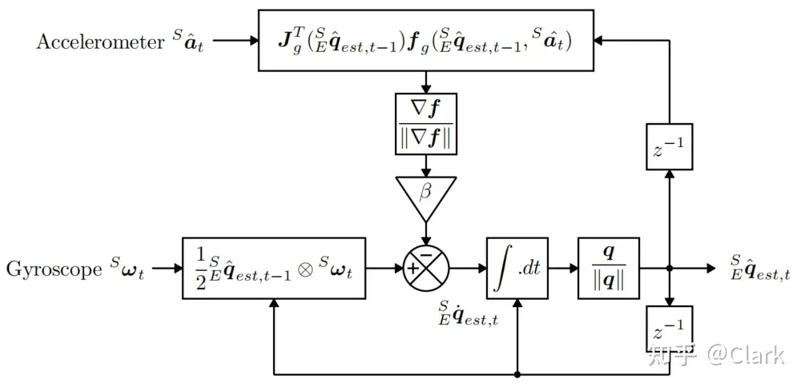
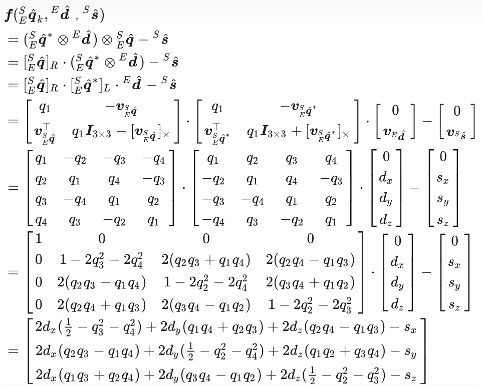
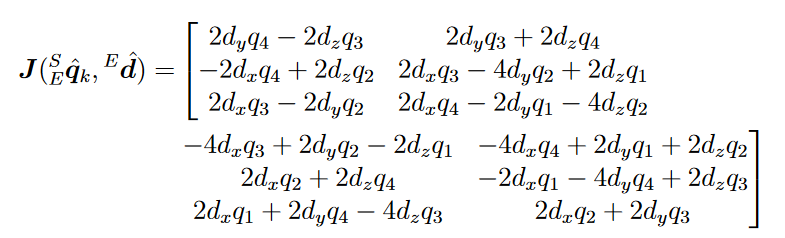

IMU融合滤波
Table of Contents
前言
向量叉乘
二维
$$ a=\begin{bmatrix}x_1\\y_1\end{bmatrix},b=\begin{bmatrix}x_2\\y_2\end{bmatrix}\\\Downarrow\\a\times b=x_1y_2-y_1x_2 $$三维
$$ a=\begin{bmatrix}x_1\\y_1\\z_1\end{bmatrix},b=\begin{bmatrix}x_2\\y_2\\z_2\end{bmatrix}\\\Downarrow\\a\times b=\begin{bmatrix}y_1z_2-z_1y_2\\z_1x_2-x_1z_2\\x_1y_2-y_1x_2\end{bmatrix} $$欧拉角
是用三个角度表示物体的空间姿态，每个角度代表物体绕其一个固定轴的旋转量
pitch俯仰角，一般来说向上转，也就是抬头为正roll翻滚角，一般是向右侧倾倒为正yaw航向角，一般是向右转为正
旋转矩阵
对于三轴角度的旋转矩阵，如下
-
绕
$$ R_x(\theta)=\begin{bmatrix}1&0&0\\0&\cos\theta&-\sin\theta\\0&\sin\theta&\cos\theta\end{bmatrix} $$x轴旋转 -
绕
$$ R_y(\gamma)=\begin{bmatrix}\cos\gamma&0&-\sin\gamma\\0&1&0\\\sin\gamma&0&\cos\gamma\end{bmatrix} $$y轴旋转 -
绕
$$ R_z(\varphi)=\begin{bmatrix}\cos\varphi&-\sin\varphi&0\\\sin\varphi&\cos\varphi&0\\0&0&1\end{bmatrix} $$z轴旋转
为了表示一个物体绕着三个轴的旋转，可以简单的将三个单轴的旋转矩阵相乘
$$ R=R_z(\varphi)R_y(\gamma)R_x(\theta) $$得到
$$ R=\begin{bmatrix}\cos\gamma\cos\varphi&-cos\theta\sin\varphi-\cos\varphi\sin\gamma\sin\theta&\sin\varphi\sin\theta-\cos\varphi\cos\theta\sin\gamma\\\cos\gamma\sin\varphi&\cos\varphi\cos\theta-\sin\gamma\sin\varphi\sin\theta&-\cos\varphi\sin\theta-\cos\theta\sin\gamma\sin\varphi\\-\sin\gamma&\cos\gamma\sin\theta&\cos\gamma\cos\theta\end{bmatrix} $$但是对于欧拉角的旋转，当任何一个坐标轴旋转角度为90度时，就会有两个轴的旋转动作起到对总体旋转结果相同的效果，这就被称为死锁
旋转矩阵与欧拉角
如上述公式，可以得到欧拉角与旋转矩阵的关系
$$ \gamma=-\arcsin R_{31}\\\theta=\arctan\frac{R_{32}}{R_{33}}\\\varphi=\arctan\frac{R_{21}}{R_{11}} $$四元数
也是一种姿态的表示，相较于欧拉角，计算更加简便，通过绕空间中的任意一个轴，旋转一定角度，就可以得到姿态角的朝向。与欧拉角和旋转矩阵相比，四元数在某些计算中具有优势，如插值和归一化。此外，四元数避免了所谓的“万向节锁，仅需要存储 4 个浮点数，比矩阵更加轻量，无论是求逆，串联操作，都比矩阵更快
四元数的表达式为
$$ q=q_0+q_1i+q_2j+q_3k $$其中的虚向量满足
$$ i^2=j^2=k^2=ijk=-1 $$四元数可以理解为四维空间，三个虚部可理解为三维空间的三个正交基，而实部垂直于三维空间
单位四元数是四维空间中一个超球上面的点，满足 $q_0^2+q_1^2+q_2^2+q_3^2=1$ ，而纯四元数是四维空间在 $w=0$ 时的一个子空间的点
单位四元数还有另一种表达公式
$$ q=\begin{bmatrix}\cos\frac{\theta}{2}&\sin\frac{\theta}{2}\vec{v}\end{bmatrix} $$共轭四元数指的是实部相同但是虚部相反的四元数，例如 $q$ 的共轭四元数为
$$ q^*=\begin{bmatrix}q_0&-q_1&-q_2&-q_3\end{bmatrix} $$四元数微分运算
四元数微分通常用下式表达
$$ \frac{dq}{dt}=0.5·q\otimes w $$其中 $\otimes$ 是四元数乘法
展开这个四元数乘法，写作矩阵形式
$$ Q(q)=\begin{bmatrix}q_0&-q_1&-q_2&-q_3\\q_1&q_0&-q_3&q_2\\q_2&q_3&q_0&-q_1\\q_3&-q_2&q_1&q_0\end{bmatrix} $$上述微分表达式可以写作
$$ \frac{dq}{dt}=0.5Q(q)\begin{bmatrix}0\\w_x\\w_y\\w_z\end{bmatrix} $$上述四元数微分还有另一种表达方式
$$ \frac{dq}{dt}=0.5\begin{bmatrix}0&-w_x&-w_y&-w_z\\w_x&0&w_z&-w_y\\w_y&-w_z&0&w_x\\w_z&w_y&-w_x&0\end{bmatrix}q $$四元数与旋转矩阵
四元数与旋转矩阵之间可以相互转换
$$ R=\begin{bmatrix}1-2q_2^2-2q_3^2&2q_1q_2-2q_0q_3&2q_1q_3+2q_0q_2\\2q_1q_2+2q_0q_3&1-2q_1^2-2q_3^2&2q_2q_3-2q_0q_1\\2q_1q_3-2q_0q_2&2q_2q_3+2q_0q_1&1-2q_1^2-2q_2^2\end{bmatrix} $$旋转矩阵需要九个参数，相比于四元数，参数量更多。但相比于四元数，旋转矩阵好处是更直观，代表着机体坐标系的三个轴的方向
四元数与欧拉角
通过上述旋转矩阵，可以得到欧拉角表示下的四元数
$$ q=\begin{bmatrix}\cos\frac{\theta}{2}\cos\frac{\gamma}{2}\cos\frac{\varphi}{2}+\sin\frac{\theta}{2}\sin\frac{\gamma}{2}\sin\frac{\varphi}{2}\\\cos\frac{\theta}{2}\sin\frac{\gamma}{2}\cos\frac{\varphi}{2}+\sin\frac{\theta}{2}\cos\frac{\gamma}{2}\sin\frac{\varphi}{2}\\\cos\frac{\theta}{2}\cos\frac{\gamma}{2}\sin\frac{\varphi}{2}-\sin\frac{\theta}{2}\sin\frac{\gamma}{2}\cos\frac{\varphi}{2}\\\sin\frac{\theta}{2}\cos\frac{\gamma}{2}\cos\frac{\varphi}{2}-\cos\frac{\theta}{2}\sin\frac{\gamma}{2}\sin\frac{\varphi}{2}\end{bmatrix} $$同理可以得到四元数表示下的欧拉角
$$ \begin{bmatrix}\theta\\\gamma\\\varphi\end{bmatrix}=\begin{bmatrix}\arctan\frac{2q_2q_3+2q_0q_1}{1-2q_1^2-2q_2^2}\\-\arcsin (2q_1q_3-2q_0q_2)\\\arctan\frac{2q_1q_2+2q_0q_3}{1-2q_2^2-2q_3^2}\end{bmatrix} $$四元数运算
对于四元数的叉乘，在 matlab 中是不支持四元数的叉乘的，所以就有了如下两种定义
$$ Q_1\otimes Q_2\\\Downarrow\\\begin{bmatrix}Q_1\end{bmatrix}_L· Q_2\\\Downarrow\\\begin{bmatrix}q_0&-q_1&-q_2&-q_3\\q_1&q_0&-q_3&q_2\\q_2&q_3&q_0&-q_1\\q_3&-q_2&q_1&q_0\end{bmatrix}·Q_2 $$$$ Q_1\otimes Q_2\\\Downarrow\\\begin{bmatrix}Q_2\end{bmatrix}_R· Q_1\\\Downarrow\\\begin{bmatrix}q_0&-q_1&-q_2&-q_3\\q_1&q_0&q_3&-q_2\\q_2&-q_3&q_0&q_1\\q_3&q_2&-q_1&q_0\end{bmatrix}·Q_1 $$坐标系之间的映射
对于在 Earth 参考系下的任意一个向量
$$ ^Ed=\begin{bmatrix}0&d_x&d_y&d_z\end{bmatrix} $$在 Sensor 坐标系下通过传感器读出的数据为
$$ ^Sd=^S_Eq^*\times {^Ed}\times {^S_Eq} $$Mahony滤波
这一部分参考于 陀螺仪姿态解算+mahony滤波算法（公式推导及其代码） - 知乎 (zhihu.com)
动机
只有角速度积分所得到的角度会漂移，需要有绝对真实的加速度去修正积分带来的误差，所以先将欧拉角的角速度得到四元数的角速度，然后积分得到当前四元数，再转化为欧拉角。
根据四元数得到重力方向
$$ g_x=2(q_1q_3-q_0q_2)\\g_y=2(q_0q_1+q_2q_3)\\g_z=q_0q_0-q_1q_1-q_2q_2+q_3q_3 $$计算积分带来的误差
根据上述可以得到仅有重力加速度的加速度矢量
$$ g=\begin{bmatrix}g_x\\g_y\\g_z\end{bmatrix} $$并且我们可以根据角速度积分得到的欧拉角和加速度所计算出的加速度矢量
$$ a=\begin{bmatrix}a_x\\a_y\\a_z\end{bmatrix} $$叉乘得到
$$ |a||g|\sin e=a\times g $$小角度近似 $\sin\psi=\psi$ ，所以就是
$$ e=\frac{a\times g}{|a||g|} $$这就能看出来积分得到的数据与真实数据之间的误差了
PI控制器修正误差
PI控制器可以看作是一个低通滤波器，它用于整合加速度计的低频信息并与陀螺仪读数互补，从而实现互补滤波的效果
$$ \begin{bmatrix}\dot\theta\\\dot\gamma\\\dot\varphi\end{bmatrix}=\begin{bmatrix}\dot\theta\\\dot\gamma\\\dot\varphi\end{bmatrix}+k_p\begin{bmatrix}e_x\\e_y\\e_z\end{bmatrix}+k_i\begin{bmatrix}e_x\\e_y\\e_z\end{bmatrix}\triangle t $$得到当前四元数
由上述可知
$$ \frac{dq}{dt}=0.5\begin{bmatrix}0&-w_x&-w_y&-w_z\\w_x&0&w_z&-w_y\\w_y&-w_z&0&w_x\\w_z&w_y&-w_x&0\end{bmatrix}q $$则有
$$ q_{k+1}=0.5\triangle t\begin{bmatrix}0&-w_x&-w_y&-w_z\\w_x&0&w_z&-w_y\\w_y&-w_z&0&w_x\\w_z&w_y&-w_x&0\end{bmatrix}q_k+q_k $$代码
根据上述公式，可以得到如下 C 代码
|
|
总结
上述的 Mahony 滤波算法实际上是基于就静止状态下的，只有在静止状态下才能使得机体的加速度 $a$ 是只有重力加速度反馈的，所以需要注意，当 $|a|$ 的大小不等于重力加速度时，置信度应该降低，对这一部分可以采用自适应的扩展卡尔曼滤波来做权重的分配
Madgwick融合算法

通过陀螺仪的加速度初步计算传感器方向的偏移 $^S_Eq_{w,t}$ 然后通过对重力加速度和地磁这两个恒定量在传感器坐标系下的投影计算传感器方向的偏移 $^S_Eq_{\triangledown,t}$。最后通过互补滤波器融合 $^S_Eq_{w,t}$ 和 $^S_Eq_{\triangledown,t}$ 来得到一个更加可信的结果，此外还要矫正地磁计数据畸变和陀螺仪零点漂移。其中 $^S_Eq$ 表示坐标系 Earth 相对于坐标系 Sensor 的单位旋转四元数
计算 $^S_Eq_{w,t}$
从陀螺仪中读取到的数据为
$$ ^Sw_t=\begin{bmatrix}0&w_x&w_y&w_z\end{bmatrix} $$地面参考系相对于传感器参考系的旋转可以由其四元数的导数对时间的积分获得，由上述可知
$$ {^S_Eq_{w,t}}={^S_E\hat{q}_{est,t-1}}+(\frac{1}{2}{^S_E\hat{q}_{est,t-1}}\otimes {^Sw_t})\triangle t={^S_E\hat{q}_{est,t-1}}+{^S_E\dot{q}_{w,t}}\triangle t $$其中 ${^S_E\hat{q}_{est,t-1}}$ 是上一时刻的估计值，这个值就是根据角速度所 $^S_Eq_{w,t}$
计算 $^S_Eq_{\triangledown,t}$
如果一个地球场的方向在地球框架内是已知的，那么在传感器框架内测量该场的方向就可以计算出传感器框架相对于地球框架的方向。然而，对于任何给定的测量，将不会有唯一的传感器方向解，相反，将有无限的解由所有这些方向表示，这些方向是通过将真实方向绕与场平行的轴旋转来实现的。
者是利用外部恒定的向量在各个角度的投影来估算传感器的位姿，在 IMU 中利用重力加速度，在 MARG 中同时利用重力加速度和地磁方向来计算。对于在 Earth 参考系下的任意一个向量
$$ ^Ed=\begin{bmatrix}0&d_x&d_y&d_z\end{bmatrix} $$在 Sensor 坐标系下通过传感器直接读出的数据为 $^Ss$ ，还有就是通过传感器所测量出的四元数转换之后所得到的向量为
$$ ^Sd=^S_Eq^*\times {^Ed}\times {^S_Eq} $$其中 $^S_Eq^*$ 为 ${^S_Eq}$ 的共轭四元数。但是这两者是通过不同的方式得到的，也就有了估计 $^S_Eq$ 的一个方法，就是构建目标函数
$$ \min f=^S_Eq^*\otimes {^Ed}\otimes {^S_Eq}-{^Ss} $$使得 $f$ 取得最小值时的 $^S_Eq$ 就是最终结果（最优结果），优化算法可以使用梯度下降法，通过迭代公式来计算
$$ ^S_Eq_{k+1}=^S_Eq_{k}-\mu \frac{\triangledown f}{\lVert\triangledown f\rVert} $$其中 $u$ 就是学习率，而 $\triangledown f$ 就是 $f$ 的梯度。计算由目标函数及其雅克比定义的解曲面的梯度
$$ \triangledown f=J^T({^S_Eq_k,{^Ed}})f $$其中
$$ J=\frac{\partial f}{\partial {^S_Eq_k}} $$上述所得到的公式适用于空间中的任意一个方向的向量，太复杂了，不好求解，看其中的思路就是把叉乘的列向量扩展到了一个方阵，类似于上式中求解四元数的加速度的方程


IMU
如果使用的是 IMU ，那其中的 $^Ed$ 就是重力加速度向量 $\begin{bmatrix}0&0&0&1\end{bmatrix}$
并且 $^Ss$ 就是 IMU 传感器所测出来的在 Sensor 坐标下的重力加速度的向量 $\begin{bmatrix}0&a_x&a_y&a_z\end{bmatrix}$ ，带入上述公式可以得到
$$ f=\begin{bmatrix}2(q_2q_3-q_1q_3)-a_x\\2(q_1q_2+q_3q_4)-a_y\\2(\frac{1}{2}-q_2^2-q_3^2)-a_z\end{bmatrix}\\J=\begin{bmatrix}-2q_3&2q_4&-2q_1&2q_2\\2q_2&2q_1&2q_4&2q_3\\0&-4q_2&-4q_3&0\end{bmatrix} $$MARG
如果使用的是 MARG，在考虑重力加速度的基础上还需要将当地的地磁传感器的读数考虑进来。
$$ ^Ed=\begin{bmatrix}0&b_x&0&b_z\end{bmatrix} $$这里是纯地磁传感器所得到的数据
$$ \\{^Sm}=\begin{bmatrix}0&m_x&m_y&m_z\end{bmatrix} $$再与上述的加速度数据融合，也就是
$$ {^Sa}=\begin{bmatrix}0&a_x&a_y&a_z\end{bmatrix} $$写作一个矩阵，就是
$$ f=\begin{bmatrix}f_g({^S_Eq,{^Sa}})\\f_d({^S_Eq,{^Ed},{^Sm}})\end{bmatrix} $$对应的雅各比矩阵就是
$$ J=\begin{bmatrix}J^T_g({^S_Eq})\\J_d^T({^S_Eq},{^Ed})\end{bmatrix} $$根据迭代公式
$$ ^S_Eq_{\triangledown,t}={^S_E\hat{q}_{est,t-1}}-\mu_t \frac{\triangledown f}{\lVert\triangledown f\rVert} $$其中
$$ \triangledown f=\left\{\begin{aligned}&J^T_g({^S_E\hat{q}_{est,t-1}})f_g({^S_E\hat{q}_{est,t-1}},{^Sa_t})\\&J^T({^S_E\hat{q}_{est,t-1}},{^E\hat{b}_t})f({^S_E\hat{q}_{est,t-1}},{^Sa_t},{^Eb_t},{^Sm_t})\end{aligned}\right. $$学习率的选择需要满足
$$ \mu_t=\alpha \lVert{^S_E\dot q_{w,t}}\rVert\triangle t $$其中 $\alpha>1$
融合滤波算法
将上述中计算出的方向四元数 $^S_Eq_{w,t}$ 和 $^S_Eq_{\triangledown,t}$ 进行融合，可以估计得到传感器相对于地球坐标系的方向 $^S_Eq_{est,t}$ ，如下
$$ ^S_Eq_{est,t}=\gamma q_{\triangledown,t}+(1-\gamma){^S_Eq_{w,t}} $$其中 $0\leq \gamma\leq 1$ ，其中 $\gamma$ 的最优值可以定义为确保 $^S_Eq_{w,t}$ 的加权发散度等于 $^S_Eq_{\triangledown,t}$ 的加权收敛度。可以将 $\gamma$ 定义为如下公式
$$ (1-\gamma)\beta=\gamma\frac{\mu_t}{\Delta}\\\gamma=\frac{\beta}{\frac{\mu_t}{\Delta}+\beta} $$假设上述中由 $\alpha$ 控制的 $^S_Eq_{\triangledown}$ 的收敛速度等于或大于实际方向变化速率，上述公式就保证了 $^S_Eq_{w,t}$ 和 $^S_Eq_{\triangledown,t}$ 的最优融合。
由上述可知 $\alpha$ 没有上界，如果 $\alpha$ 非常大时，那么上述公式中所定义的 $\mu_t$ 就非常大，那这个滤波也就简化了，这意味着 ${^S_E\hat{q}_{est,t-1}}$ 可以忽略不计，所以公式可以写作
$$ ^S_Eq_{\triangledown,t}=-\mu_t \frac{\triangledown f}{\lVert\triangledown f\rVert} $$相应的公式中的 $\gamma$ 也简化了，公式中的 $\beta$ 项可以忽略不计，因此可写作
$$ \gamma=\frac{\beta\Delta t}{\mu_t} $$甚至可以假设 $\gamma=0$ 。将上述得到的带入融合滤波公式，可以得到
$$ ^S_Eq_{est,t}=\gamma q_{\triangledown,t}+(1-\gamma){^S_Eq_{w,t}}\\=\frac{\beta\Delta t}{\mu_t}(-\mu_t \frac{\triangledown f}{\lVert\triangledown f\rVert})+(1-0)({^S_E\hat{q}_{est,t-1}}+{^S_E\dot{q}_{w,t}}\triangle t)\\={^S_E\hat{q}_{est,t-1}}+({^S_E\dot{q}_{w,t}}-\beta\frac{\triangledown f}{\lVert\triangledown f\rVert})\Delta t $$上式就可以化简为
$$ ^S_Eq_{est,t}={^S_E\hat{q}_{est,t-1}}+{^S_E\dot{q}_{est,t}}\Delta t $$其中
$$ ^S_E\dot{q}_{est,t}={^S_E}\dot{q}_{w,t}-\beta{^S_E\dot{\hat{q}}_{\varepsilon,t}}\\{^S_E\dot{\hat{q}}_{\varepsilon,t}}=\frac{\triangledown f}{\lVert\triangledown f\rVert} $$可以看出，滤波器通过对估计的方向四元数导数 $^S_E\dot{q}_{est}$ 进行数值积分得到方向 $^S_E\dot{q}_{est}$ 。滤波器将其计算为陀螺仪测量方向变化率 $^S_E\dot{q}_{w}$ 。有了陀螺仪测量误差 $\beta$ ，然后再估计误差方向上减去从加速度计和磁力计测量计算得到的 ${^S_E\dot{\hat{q}}_{\varepsilon}}$
代码
由于 matlab 中并不支持四元数的叉乘，所以写了一个函数来实现四元数的叉乘
首先是四元数转化为方阵形式，根据上述的说明，有两种转化方式
|
|
所以此传感器的代码为（未加磁偏角）
|
|
其中 $Fg$ 和 $Fb$ 分别是在 IMU 和 MARG 条件下的 $\triangledown f$ ，最终得到的 $q_1$ 和 $q_2$ 就是该条件下滤波的最终结果